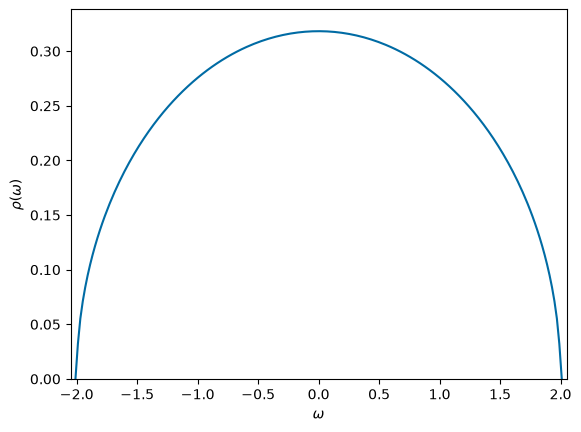
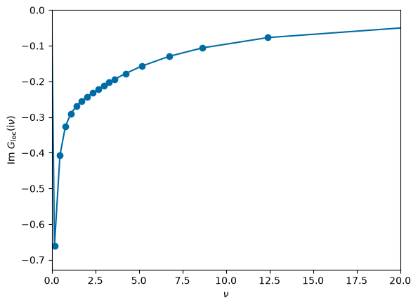
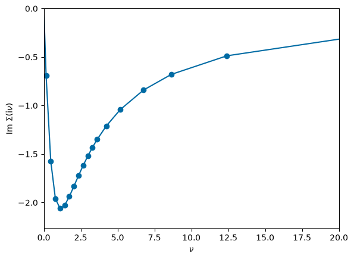
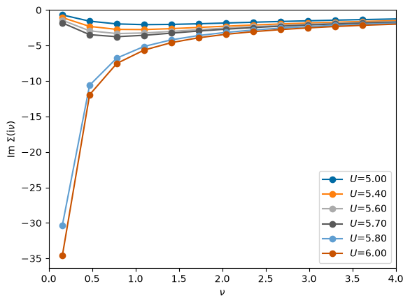
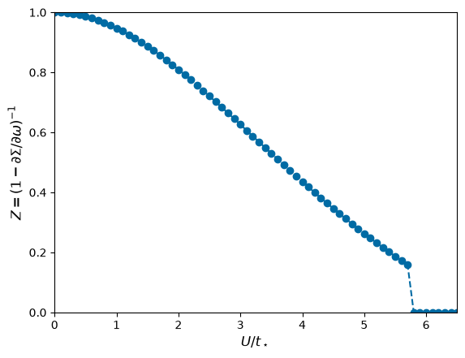
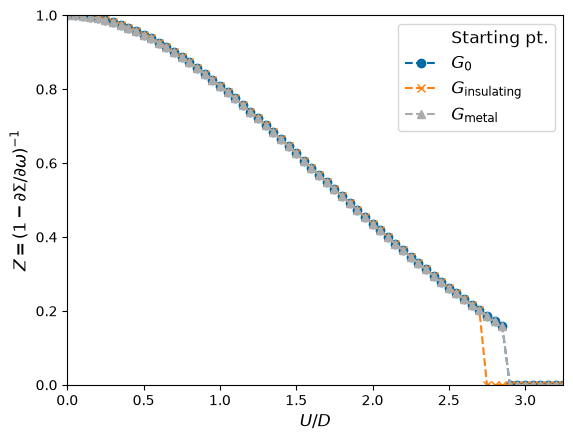

DMFT with IPT solver#
Author: Niklas Witt
In this tutorial, we will implement the Dynamical Mean-Field Theory (DMFT) using the iterative perturbation theory (IPT) as a solver for the impurity problem [1]. It is assumed that the reader is somewhat familiar with the concept of DMFT and the Anderson impurity model. Good resources to learn about this topic can be found, e.g., in Refs. [2-4].
Theory#
Model#
We compute a paramagnetic solution assuming the non-interacting semi-circular density of state (Bethe lattice)
at half filling. We set the hopping \(t_\star=1\), so that the half bandwitdh is \(D=2t_\star = 2\). Our goal is to find the Mott transition in this model. The non-interacting, local Green function is given by the spectral representation
with fermionic Matsubara frequencies \(\nu = n\pi T\) (odd \(n\)). We can directly compute this equation with the IR basis.
DMFT equations#
In DMFT, the self-energy is approximated by the local solution of an impurity model. The self-consistent equations to be solved are the Dyson equation of the interacting local Green function \(G_{\mathrm{loc}}\)
with the self-energy \(\Sigma\) (from the impurity problem) and the cavity Green function/Weiss field \(\mathcal{G}\) as well as the mean-field mapping for the Bethe lattice [2]
for which the impurity problem needs to be solved. As a starting point we put in \(G^0_{\mathrm{loc}}(\mathrm{i}\nu)\) into the latter equation.
IPT Solver#
The IPT is an inexpensive way of solving the impurity problem (instead of applying e.g. Quantum Monte Carlo (QMC) or Exact Diagonalization (ED) methods). The self-energy is approximated by the second-order perturbation theory (SOPT/GF2, see other tutorial)
with the Hubbard interaction \(U\) and imaginary time \(\tau\). Note that we absorbed the constant Hartree term \(\Sigma_H = U n_{\sigma} = U\frac{n}{2}\) into the definition of the chemical potential \(\mu\) (at half filling, it is shifted to zero). Otherwise we would have to treat this term separately, since the IR basis cannot model the \(\delta\)-peak in frequency space well/compactly. In this case, evaluate the term analytically and add it after the Fourier transformation step.
Renormalization factor#
The Mott transition can be detected by monitoring the renormalization factor
In the non-interacting limit \(U\rightarrow 0\) we have \(Z\rightarrow 1\). Correlation effects reduce \(Z\) as \(Z < 1\) and the Mott transition is signaled by a jump \(Z\to0\).
[1] A. Georges and G. Kotliar, Phys. Rev. B 45, 6479 (1992)
[2] A. Georges et al., Rev. Mod. Phys. 68, 13 (1996)
[3] Many book chapters of the Jülich autumn school series, see https://www.cond-mat.de/events/correl.html
[4] R. M. Martin, L. Reining, D. M. Ceperley, Interacting Electrons, Cambridge University Press (2016)
Notes on practical implementation#
We will try to find the Mott transition which is a phase transition of first order. To illustrate this, we will do calculations starting from the metallic and the insulating phase at the end of this tutorial. This will show a hysteresis, signaling the metastable/coexistence region of both solutions. For converged results, this will need many iteration steps.
In the insulating phase, the low-frequency part of the self-energy turns downwards and diverges. Using the above formula for calculating the renormalization factor \(Z\) from a linearized self-energy, it would be negative. To circumvent this unphysical notion, \(Z\) then is defined as zero in the implementation.
At half filling with a symmetric density of states the exact self-energy is particle-hole symmetric: \(\Sigma(\mathrm{i}\nu)\) is purely imaginary and odd in \(\nu\). The Fourier transform via the IR basis preserves this only up to rounding errors, and the symmetric solution is an unstable fixed point of the DMFT iteration with respect to perturbations that break the symmetry: a deviation of \(10^{-16}\) grows by roughly 40% per iteration until, after a few hundred iterations, the loop ends up in an unphysical, symmetry-broken state. We therefore project each new self-energy onto its symmetric part, \(\Sigma(\mathrm{i}\nu) \to \mathrm{i}\,\frac{1}{2}[\mathrm{Im}\,\Sigma(\mathrm{i}\nu) - \mathrm{Im}\,\Sigma(-\mathrm{i}\nu)]\). Without this projection, the converged calculations below show a spurious “transition” near \(U/t_\star \approx 3.5\).
We include a mixing \(p<1\) in each iteration step, such that the Green function of step \(n+1\) is partially constructed from the old and new Green function as \(G^{n+1} = p\,G^{n+1} + (1-p)\,G^{n}\). This smoothes too strong oscillations of the solution which is important especially near the phase transition point.
Code implementation#
import numpy as np
import scipy as sc
import scipy.optimize
from warnings import warn
import sparse_ir
%matplotlib inline
import matplotlib.pyplot as plt
plt.style.use('tableau-colorblind10')
# Get sparse-ir version
try:
from importlib.metadata import version
sparse_ir_version = version('sparse-ir')
except ImportError:
try:
import pkg_resources
sparse_ir_version = pkg_resources.get_distribution('sparse-ir').version
except:
sparse_ir_version = "unknown"
print(f"sparse-ir version: {sparse_ir_version}")
sparse-ir version: 2.1.5
Setting up the solver#
Generating meshes#
We need to generate IR basis functions on a sparse \(\tau\) and \(\mathrm{i}\nu\) grid. In addition, we set calculation routines to Fourier transform \(\tau\leftrightarrow \mathrm{i}\nu\) (via IR basis).
# Initiate fermionic and bosonic IR basis objects by using (later):
# IR_basis_set = sparse_ir.FiniteTempBasisSet(beta, wmax, eps=IR_tol)
class Mesh:
"""
Holding class for sparsely sampled imaginary time 'tau' / Matsubara frequency 'iwn' grids.
Additionally it defines the Fourier transform via 'tau <-> l <-> wn'.
"""
def __init__(self,IR_basis_set):
self.IR_basis_set = IR_basis_set
# lowest Matsubara frequency index
self.iw0_f = np.where(self.IR_basis_set.wn_f == 1)[0][0]
self.iw0_b = np.where(self.IR_basis_set.wn_b == 0)[0][0]
# frequency mesh (for plotting Green function/self-energy)
self.iwn_f = 1j * self.IR_basis_set.wn_f * np.pi * T
# index of -n for every fermionic sampling frequency n (they come in ± pairs)
wn_f = list(self.IR_basis_set.wn_f)
self.mirror_f = np.array([wn_f.index(-n) for n in wn_f])
def ph_symmetrize(self, obj_wn):
""" Particle-hole symmetric part of a fermionic function at half filling: i*Im, odd in iwn """
return 0.5j * (obj_wn.imag - obj_wn.imag[self.mirror_f])
def smpl_obj(self, statistics):
""" Return sampling object for given statistic """
smpl_tau = {'F': self.IR_basis_set.smpl_tau_f, 'B': self.IR_basis_set.smpl_tau_b}[statistics]
smpl_wn = {'F': self.IR_basis_set.smpl_wn_f, 'B': self.IR_basis_set.smpl_wn_b }[statistics]
return smpl_tau, smpl_wn
def tau_to_wn(self, statistics, obj_tau):
""" Fourier transform from tau to iwn via IR basis """
smpl_tau, smpl_wn = self.smpl_obj(statistics)
obj_l = smpl_tau.fit(obj_tau, axis=0)
obj_wn = smpl_wn.evaluate(obj_l, axis=0)
return obj_wn
def wn_to_tau(self, statistics, obj_wn):
""" Fourier transform from iwn to tau via IR basis """
smpl_tau, smpl_wn = self.smpl_obj(statistics)
obj_l = smpl_wn.fit(obj_wn, axis=0)
obj_tau = smpl_tau.evaluate(obj_l, axis=0)
return obj_tau
IPT solver#
We write a function for the IPT solver. We use the Mesh class defined above to perform calculation steps.
def IPTSolver(mesh, g_weiss, U):
r"""
IPT solver to calculate the impurity problem.
Input:
mesh - Holding class of IR basis with sparsely sampled grids.
g_weiss - Weiss field of the bath (\mathcal(G); cavity Green function)
on Matsubara frequencies iwn.
U - Hubbard interaction strength
"""
# Fourier transform to imaginary time
gtau = mesh.wn_to_tau('F', g_weiss)
# Self-energy in SOPT
sigma = U**2 * gtau**3
# Fourier transform back to Matsubara frequency
sigma = mesh.tau_to_wn('F', sigma)
return sigma
DMFT loop#
We wrap the DMFT loop in a class that sets all necessary quantities when initializing and runs when calling the .solve instance.
class DMFT_loop:
def __init__(self,mesh, g0_loc, U, D, sfc_tol=1e-4, maxiter=20, mix=0.2,
verbose=True):
# Set input
self.mesh = mesh
self.U = U
self.t = D/2
self.mix = mix
self.sfc_tol = sfc_tol
self.maxiter = maxiter
self.verbose = verbose
# Initial Green function (e.g. non-interacting)
self.g_loc = g0_loc
# Initiate Weiss field
self.sigma = 0
self.calc_g_weiss()
def solve(self):
for it in range(self.maxiter):
sigma_old = self.sigma
# Solve impurity problem in IPT
sigma = IPTSolver(self.mesh, self.g_weiss, self.U)
# Enforce particle-hole symmetry (see the notes above)
sigma = self.mesh.ph_symmetrize(sigma)
self.sigma = sigma*self.mix + self.sigma*(1-self.mix)
# Set new Green function and Weiss field
self.calc_g_loc()
self.calc_g_weiss()
# Check whether solution is converged
sfc_check = np.sum(abs(self.sigma-sigma_old))/np.sum(abs(self.sigma))
if self.verbose:
print(it, sfc_check)
if sfc_check < self.sfc_tol:
if self.verbose:
print("DMFT loop converged at desired accuracy of", self.sfc_tol)
break
def calc_g_loc(self):
# Set interacting local Green function from Dyson's equation.
self.g_loc = (self.g_weiss**(-1) - self.sigma)**(-1)
def calc_g_weiss(self):
# Calculate Weiss mean field of electron bath.
self.g_weiss = (self.mesh.iwn_f - self.t**2 * self.g_loc)**(-1)
#self.g_weiss = (self.g_loc**(-1) + self.sigma)**(-1)
Calculations#
Parameter setting#
### System parameters
D = 2 # half bandwidth D = W/2 ; hopping t = 1 here
wmax = 2*D # set wmax >= W = 2*D
T = 0.1/D # temperature
beta = 1/T # inverse temperature
U = 5. # Hubbard interaction
### Numerical parameters
IR_tol = 1e-15 # desired accuracy for l-cutoff of IR basis functions
maxiter = 300 # maximal number of DMFT convergence steps
sfc_tol = 1e-5 # desired accuracy of DMFT convergence
mix = 0.25 # mixing factor
### Initialize calculation
# Set mesh
IR_basis_set = sparse_ir.FiniteTempBasisSet(beta, wmax, eps=IR_tol)
mesh = Mesh(IR_basis_set)
# Calculate non-interacting Green function
rho = lambda omega : 2*np.sqrt(D**2 - np.clip(omega, -D, D)**2)/(np.pi*D**2)
rho_l = IR_basis_set.basis_f.v.overlap(rho)
g0_l = -IR_basis_set.basis_f.s * rho_l
g0_loc = IR_basis_set.smpl_wn_f.evaluate(g0_l)
# Initiate DMFT loop
solver = DMFT_loop(mesh, g0_loc, U, D, sfc_tol=sfc_tol, maxiter=maxiter, mix=mix, verbose=True)
# perform DMFT calculations
solver.solve()
0 1.0
1 0.45267476683362445
2 0.26493595064106473
3 0.17712860649742396
4 0.12506086096213875
5 0.09230256725264957
6 0.06979019823464438
7 0.0539348679134275
8 0.04227192248431609
9 0.03357001205305856
10 0.026918490396746857
11 0.02178060640451257
12 0.017753397702789726
13 0.014569540519803716
14 0.01202758603339807
15 0.009983392596859686
16 0.008327397213775522
17 0.006977578428932544
18 0.005870782942216337
19 0.004958407997128695
20 0.004202509930752009
21 0.003573339083001508
22 0.0030473652027620027
23 0.0026058772221248493
24 0.0022338993660158167
25 0.0019193817067255608
26 0.0016525753516395635
27 0.0014255535425500797
28 0.0012318393774382883
29 0.0010661159416729855
30 0.0009239988579874221
31 0.0008018571118818415
32 0.0006966711221955544
33 0.000605919820688267
34 0.00052749038299995
35 0.0004596057498230946
36 0.00040076617305610335
37 0.00034970186969055325
38 0.00030533450830591265
39 0.0002667457486553967
40 0.0002331514361239975
41 0.00020388034851012845
42 0.00017835662234995655
43 0.00015608516530646622
44 0.00013663950154745456
45 0.00011965160738278942
46 0.00010480338139665915
47 9.18194621435337e-05
48 8.046116109788482e-05
49 7.052132205578616e-05
50 6.18199529704878e-05
51 5.420050408101041e-05
52 4.752668865234666e-05
53 4.167976077948825e-05
54 3.6556179390291074e-05
55 3.206559956733245e-05
56 2.8129142044532442e-05
57 2.4677899776758364e-05
58 2.1651647020831535e-05
59 1.899772185218478e-05
60 1.6670057498499578e-05
61 1.462834166194288e-05
62 1.2837286096104038e-05
63 1.1265991334961695e-05
64 9.88739367996339e-06
DMFT loop converged at desired accuracy of 1e-05
Visualize results#
# Plot spectral function/density of states
omega = np.linspace(-D-0.01, D+0.01,200)
plt.plot(omega, rho(omega),'-')
ax = plt.gca()
ax.set_xlim([-D-0.05,D+0.05])
ax.set_ylim([0,2/np.pi/D+0.02])
ax.set_xlabel('$\\omega$')
ax.set_ylabel('$\\rho(\\omega)$')
plt.show()

# plot frequency dependence of Green function
plt.plot(np.imag(mesh.iwn_f), np.imag(solver.g_loc),'-o')
ax = plt.gca()
ax.set_xlabel('$\\nu$')
ax.set_xlim([0,20])
ax.set_ylabel('Im $G_{\\mathrm{loc}}(\\mathrm{i}\\nu)$')
ax.set_ylim(ymax=0)
plt.show()

# plot frequency dependence of self-energy
plt.plot(np.imag(mesh.iwn_f), np.imag(solver.sigma),'-o')
ax = plt.gca()
ax.set_xlabel('$\\nu$')
ax.set_xlim([0,20])
ax.set_ylabel('Im $\\Sigma(\\mathrm{i}\\nu)$')
ax.set_ylim(ymax=0)
plt.show()

Renormalization factor#
We calculate the renormalization factor from a linearized self-energy. It is also possible to approximate it from the lowest Matsubara frequency (see and try out the difference!).
def CalcRenormalizationZ(solver):
sigma = solver.sigma
sigma_iw0 = sigma[solver.mesh.iw0_f]
sigma_iw1 = sigma[solver.mesh.iw0_f+1]
beta = solver.mesh.IR_basis_set.beta
Z = 1/(1 - np.imag(sigma_iw1 - sigma_iw0)*beta/(2*np.pi))
#Z = 1/(1 - np.imag(sigma_iw0)*beta/np.pi)
# When system turns insulating, slope becomes positive/Z becomes negative -> set Z to zero then
if Z < 0:
Z = 0
return Z
Now we perform calculations for different \(U\) to find the Mott transition. To see the evolution, we also plot the self-energy for some \(U\) values.
# Set U values as unit of t
U_min = 0
U_max = 6.5
U_num = 66
U_arr = np.linspace(U_min, U_max, U_num)
Z_arr = np.empty(U_arr.shape)
# Set new convergence parameters to achieve good convergence near the phase transition line
maxiter = 1500 # maximal number of DMFT convergence steps
sfc_tol = 1e-14 # desired accuracy of DMFT convergence
# Set mesh
IR_basis_set = sparse_ir.FiniteTempBasisSet(beta, wmax, eps=IR_tol)
mesh = Mesh(IR_basis_set)
# Calculate noninteracting Green function
rho = lambda omega : np.sqrt(D**2 - np.clip(omega, -D, D)**2)/(np.pi*D)
rho_l = IR_basis_set.basis_f.v.overlap(rho)
g0_l = -IR_basis_set.basis_f.s * rho_l
g0_loc = IR_basis_set.smpl_wn_f.evaluate(g0_l)
plt.figure()
for it, U in enumerate(U_arr):
# Starting from non-interacting solution
solver = DMFT_loop(mesh, g0_loc, U, D, sfc_tol=sfc_tol, maxiter=maxiter, mix=mix, verbose=False)
solver.solve()
Z = CalcRenormalizationZ(solver)
Z_arr[it] = Z
if it in [50, 54, 56, 57, 58, 60]:
plt.plot(np.imag(mesh.iwn_f[mesh.iw0_f:]), np.imag(solver.sigma[mesh.iw0_f:]),'-o', label='$U$={:.2f}'.format(U))
ax = plt.gca()
ax.set_xlabel('$\\nu$')
ax.set_xlim([0,4])
ax.set_ylabel('Im $\\Sigma(\\mathrm{i}\\nu)$')
ax.set_ylim(ymax=0)
ax.legend()
#%%%%%%%%%%%%%%%% Plot results
plt.figure()
plt.plot(U_arr, Z_arr, '--o')
ax = plt.gca()
ax.set_xlabel('$U/t_\\star$', fontsize=12)
ax.set_xlim([U_min, U_max])
ax.set_ylabel(r'$Z = (1-\partial\Sigma/\partial\omega)^{-1}$', fontsize=12)
ax.set_ylim([0,1])
plt.show()
/tmp/ipykernel_5602/1063916292.py:36: RuntimeWarning: invalid value encountered in scalar divide
sfc_check = np.sum(abs(self.sigma-sigma_old))/np.sum(abs(self.sigma))


You can quite well see a jump of \(Z\) between \(U/t_\star=5.7\) and 5.8 which is accompanied by the low-frequency part of the self-energy diverging instead of going to zero.
In a last step, we want to map out the metastable coexistence region. In order to do this, we have to start every new \(U\) calculation from the previous converged solution. If we start from small \(U\), we start from the metallic region, whereas starting from large \(U\) corresponds to starting from the insulating solution.
Z_arr_mt = np.empty(U_arr.shape)
Z_arr_in = np.empty(U_arr.shape)
for it in range(len(U_arr)):
if it != 0:
solver_mt = DMFT_loop(mesh, solver_mt.g_loc, U_arr[it], D, sfc_tol=sfc_tol, maxiter=maxiter, mix=mix, verbose=False)
solver_in = DMFT_loop(mesh, solver_in.g_loc, U_arr[U_num-1-it], D, sfc_tol=sfc_tol, maxiter=maxiter, mix=mix, verbose=False)
else:
solver_mt = DMFT_loop(mesh, g0_loc, U_arr[it], D, sfc_tol=sfc_tol, maxiter=maxiter, mix=mix, verbose=False)
solver_in = DMFT_loop(mesh, g0_loc, U_arr[U_num-1-it], D, sfc_tol=sfc_tol, maxiter=maxiter, mix=mix, verbose=False)
solver_mt.solve()
Z = CalcRenormalizationZ(solver_mt)
Z_arr_mt[it] = Z
solver_in.solve()
Z = CalcRenormalizationZ(solver_in)
Z_arr_in[U_num-1-it] = Z
#%%%%%%%%%%%%%%%% Plot results
plt.figure()
plt.plot([],[],'w',label='Starting pt.')
plt.plot(U_arr, Z_arr, '--o', label='$G_0$')
plt.plot(U_arr, Z_arr_in, '--x', label='$G_{\\mathrm{insulating}}$')
plt.plot(U_arr, Z_arr_mt, '--^', label='$G_{\\mathrm{metal}}$')
ax = plt.gca()
ax.set_xlabel('$U/t_\\star$', fontsize=12)
ax.set_xlim([U_min, U_max])
ax.set_ylabel(r'$Z = (1-\partial\Sigma/\partial\omega)^{-1}$', fontsize=12)
ax.set_ylim([0,1])
ax.legend(fontsize=12)
plt.show()
/tmp/ipykernel_5602/1063916292.py:36: RuntimeWarning: invalid value encountered in scalar divide
sfc_check = np.sum(abs(self.sigma-sigma_old))/np.sum(abs(self.sigma))
The metallic solution exists up to \(U/t_\star = 5.7\) (\(U_{c2}\) lies between 5.7 and 5.8), while the insulating solution survives down to \(U/t_\star = 5.5\) (\(U_{c1}\) lies between 5.4 and 5.5). In between, both solutions are stable and which one is obtained depends on the starting point: this is the coexistence region of the first-order Mott transition. For comparison, we also plotted the line where we always start from the non-interacting Green function \(G_0\). It coincides with the line starting from the metallic solution, since \(G_0\) lies in the basin of the metal wherever the metal exists; a scan from \(G_0\) alone therefore only finds \(U_{c2}\).
Try also removing the line sigma = self.mesh.ph_symmetrize(sigma) in DMFT_loop.solve: rounding errors then drive the loop away from the particle-hole symmetric solution, and the scan shows a spurious “transition” near \(U/t_\star \approx 3.5\).
Often the energy unit is not the hopping \(t_\star\) but the half-bandwidth \(D\), so we can also plot the results in this convention:
#%%%%%%%%%%%%%%%% Plot results
plt.figure()
plt.plot([],[],'w',label='Starting pt.')
plt.plot(U_arr/D, Z_arr, '--o', label='$G_0$')
plt.plot(U_arr/D, Z_arr_in, '--x', label='$G_{\\mathrm{insulating}}$')
plt.plot(U_arr/D, Z_arr_mt, '--^', label='$G_{\\mathrm{metal}}$')
ax = plt.gca()
ax.set_xlabel('$U/D$', fontsize=12)
ax.set_xlim([U_min/D, U_max/D])
ax.set_ylabel(r'$Z = (1-\partial\Sigma/\partial\omega)^{-1}$', fontsize=12)
ax.set_ylim([0,1])
ax.legend(fontsize=12)
plt.show()
